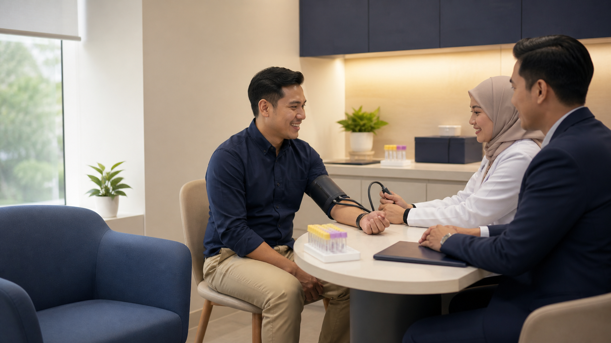

A Medical Examination Is Not an Automatic Rejection
An insurer may ask for a medical examination after reviewing your age, requested coverage, occupation, health declaration or existing medical information. The request usually means the underwriter needs more evidence before deciding—not that something is already wrong or the application has been rejected.
Why Some Applicants Are Asked and Others Are Not
Requirements vary by insurer, product and application. They may be triggered by higher insured amounts, age-based limits, previous diagnoses or surgery, medication, symptoms, family history, body measurements, hazardous work, inconsistent answers or a need to update older reports.
Another applicant of the same age may receive different requirements because the requested benefits and disclosed history are different.
What Tests Might Be Requested?
- height, weight, pulse and blood pressure;
- a doctor’s physical examination and health questionnaire;
- urine or blood tests;
- electrocardiogram (ECG) or chest X-ray;
- condition-specific imaging or laboratory investigations; or
- a report from a treating doctor or specialist.
Not everyone needs every test. Complete only the authorised requirements and clarify whether a specific panel clinic or specialist must be used.
Panel Clinic, Appointment and Fasting
Allianz Malaysia states publicly that a life agent may arrange a required medical examination with a panel clinic. Before attending, confirm the clinic, appointment reference, identity documents, tests ordered and whether fasting is required.
Do not assume every blood test requires fasting. Follow the clinic’s written instructions. Ask whether water and usual medication are allowed; never stop prescribed medication merely to improve a reading unless the treating doctor instructs you to do so.
Who Pays for the Examination?
Payment arrangements depend on who requested the test, the insurer’s authorisation and whether the applicant uses the specified provider. Some insurer-authorised requirements may be arranged directly, while self-initiated tests, missed appointments, extra reports or non-panel services may be treated differently.
Confirm in writing before attending: who pays, whether an authorisation letter is required, and whether any amount paid personally can be reimbursed. Do not rely on a universal “free medical check-up” assumption.
How to Prepare Honestly
- sleep normally and avoid unusual strenuous exercise beforehand;
- follow fasting instructions exactly;
- bring identification, spectacles and a medication list;
- continue medication unless your doctor says otherwise;
- declare recent illness, supplements and treatment;
- arrive early enough to rest before blood-pressure measurement; and
- answer the clinic and proposal questions consistently.
Do not dehydrate yourself, skip medication or temporarily change habits to manipulate results. A single artificial reading can create safety risks and inconsistencies with later records.
What If the Result Is Abnormal?
One abnormal result does not automatically prove a disease or determine the underwriting outcome. The insurer may request a repeat test, GP review, specialist assessment or earlier medical records. Clinical interpretation belongs to a qualified doctor.
If the clinic identifies a result that may require medical attention, follow appropriate medical advice. Insurance approval should never take priority over your health.
Can You Obtain a Copy of the Results?
Ask the clinic and insurer how results are handled and whether a copy or medical explanation can be provided. Access procedures can differ because the examination was commissioned for underwriting and involves confidential medical information.
If you receive results, keep them securely. Do not publish or casually forward complete medical documents containing identification numbers.
Possible Outcomes After the Examination
| Outcome | Possible meaning |
|---|---|
| Standard terms | Accepted without special pricing or exclusions |
| Premium loading | Coverage offered at a higher premium or insurance charge |
| Specific exclusion | A defined condition, body system or related treatment is excluded |
| Modified coverage | Different benefit, amount, duration or structure is offered |
| Postponement | A decision waits for recovery, stability or further evidence |
| Decline | The requested coverage is not offered at that time |
Completing every test does not guarantee approval. The examination is one part of the application, considered together with the proposal answers, medical history and requested benefits.
Disclosure Still Matters
A normal examination does not erase earlier symptoms, treatment or diagnoses. Allianz’s public duty-of-disclosure notice says consumer applicants must take reasonable care to answer application questions fully and accurately. Disclose the history and let the insurer assess it alongside the current findings.
Public References and Final Checklist
Public references: Allianz Malaysia: what to expect from a life agent, Allianz Malaysia duty of disclosure, and the Allianz panel-provider locator.
Before the appointment, confirm five things: the exact tests, clinic, fasting instructions, payment arrangement and documents to bring. Afterward, wait for the written underwriting decision and review every offered term before accepting it.
Were You Asked to Complete an Insurance Medical Examination?
CASB can help you understand the requirements, arrange the authorised process and review the written underwriting outcome. We cannot guarantee approval.